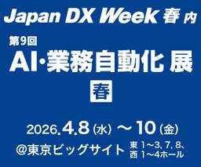
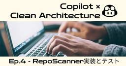
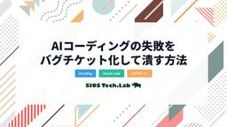
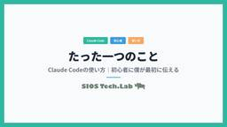

SIOS Tech Lab
https://tech-lab.sios.jp
サイオステクノロジーのエンジニアが クラウド、OSS、認証に関する様々な情報を提供します。
フィード
GitHub Copilot Code Reviewの自動学習ループ — 一度指摘すれば次からはAIが怒ってくれる仕組みを作ってみた 1
1
SIOS Tech Lab
要約 はじめに こんにちは、サイオステクノロジーの藤井です。 Pull Requestのレビューをしているときに「この指摘、前のPRでも同じことを言った気がする」ってことありますよね。私はありました。 今回は、そんなレビ ...GitHub Copilot Code Reviewの自動学習ループ — 一度指摘すれば次からはAIが怒ってくれる仕組みを作ってみた first appeared on SIOS Tech Lab.
3日前
Copilot × Clean Architecture | プロンプト効率化
SIOS Tech Lab
エピソード紹介 こんな方へ特におすすめ 概要 こんにちは。サイオステクノロジーのはらちゃんです！ GitHub Copilotは非常に便利ですが、そのままコードを生成させると「動くけど、プロジェクトの規約違反になっている ...Copilot × Clean Architecture | プロンプト効率化 first appeared on SIOS Tech Lab.
3日前

4/8(水)～4/10(金) Japan DX Weekに出展します
SIOS Tech Lab
2026年4月8日（水）～4月10日（金）の3日間、Japan DX Weekに出展いたします。 生成AIの活用が進む中、OSSライセンスや著作権リスクはますます見えにくくなっています。 サイオステクノロジーのブースでは ...4/8(水)～4/10(金) Japan DX Weekに出展します first appeared on SIOS Tech Lab.
3日前
GitHub Wikiの管理が面倒？Actionsで自動同期する実践手順
SIOS Tech Lab
ども！最近 GitHub Wiki の管理に頭を悩ませている龍ちゃんです。 既製アクション 1 本と YAML 30 行で、docs/wiki/ を GitHub Wiki に自動同期できる仕組みを作ったので共有しますね ...GitHub Wikiの管理が面倒？Actionsで自動同期する実践手順 first appeared on SIOS Tech Lab.
4日前

Copilot × Clean Architecture | 実装とテスト
SIOS Tech Lab
エピソード紹介 こんな方へ特におすすめ 概要 こんにちは。サイオステクノロジーのはらちゃんです！ シリーズ4本目となる今回は、いよいよ待望の実装編に突入します。 ここで大きな役割を果たすのが TDD（テスト駆動開発） で ...Copilot × Clean Architecture | 実装とテスト first appeared on SIOS Tech Lab.
5日前
EntraIDを利用したLDAPレスShibboleth構成
SIOS Tech Lab
どうも技術部のシニアエンジニア 佐藤です。 今回は表題の通りLDAPレスのShibboleth構成をご紹介させていただきます。 しかもなんと今回は私がやったわけではありません。 サイオスと長年に渡りお付き合い頂いておりま ...EntraIDを利用したLDAPレスShibboleth構成 first appeared on SIOS Tech Lab.
6日前

Claude Codeの失敗をバグチケット化して潰す方法
SIOS Tech Lab
ども！毎日 Claude Code と一緒に仕事している龍ちゃんです。 この記事を読むと、こんなことができるようになります。 毎日 Claude Code と話してると、同じ回避を繰り返してないか？ 毎日Claude C ...Claude Codeの失敗をバグチケット化して潰す方法 first appeared on SIOS Tech Lab.
6日前
Copilot × Clean Architecture | ER設計と監査ログ
SIOS Tech Lab
エピソード紹介 こんな方へ特におすすめ 概要 こんにちは。サイオステクノロジーのはらちゃんです！ 白紙の状態からER設計を考えることをあまり経験したことがないため、ハードルが高いと感じていました。 今回、0から考える良い ...Copilot × Clean Architecture | ER設計と監査ログ first appeared on SIOS Tech Lab.
6日前

Claude Codeの使い方｜初心者に僕が最初に伝える、たった一つのこと
SIOS Tech Lab
ども！最近、社内でClaude Codeの普及活動している龍ちゃんです。 Claude Codeは機能開発も爆速で、最近覚えること多いなってなったんですよね。あれもこれも教えるのって大変じゃないですか？なので、契約したば ...Claude Codeの使い方｜初心者に僕が最初に伝える、たった一つのこと first appeared on SIOS Tech Lab.
6日前